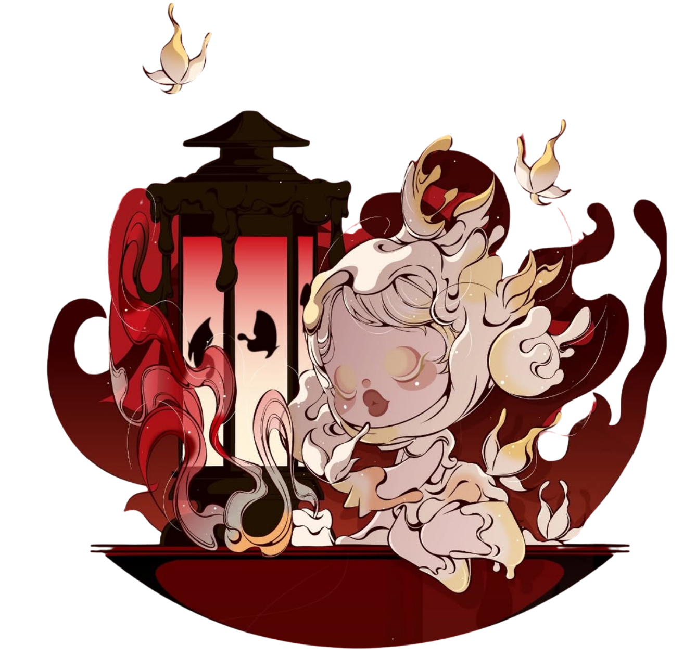
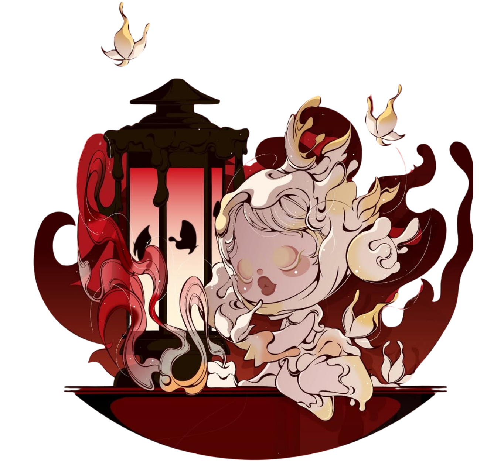

Unveil unique chapters of a universe-traversing journey
Learn More
 

SKULLPANDA emerged as a distinctive kind of existence. As a universal symbiont, it travels freely between planets,
looks for itself, plays different roles and experiences different lives.
The first time you see SKULLPANDA, you are gripped by an inexplicable force. It dwells in the darkness of empty
endless space, presenting itself as a wide openness, the kind that has no bounds.
“SKULLPANDA is another version of myself, but freer and more boundless." - Xiong Miao